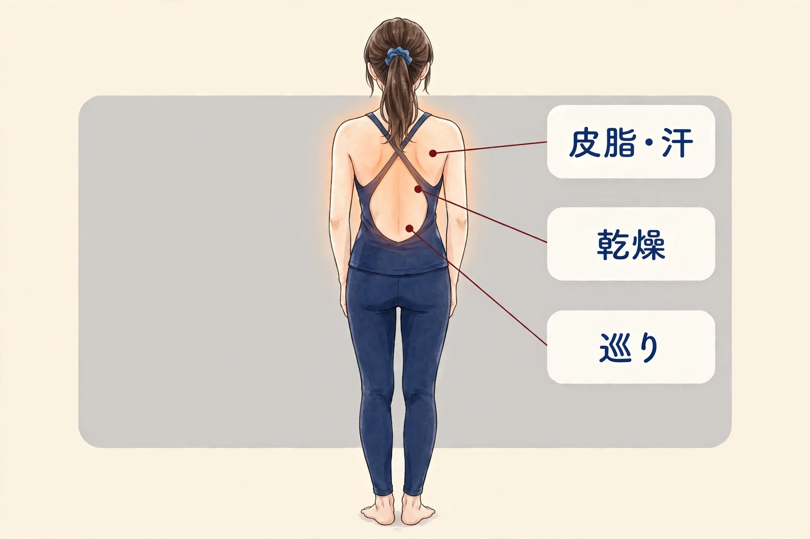

背中の肌荒れ
美容整体ステラ・ポラリス東三国｜大阪市淀川区東三国・東三国駅徒歩5分・女性向け

手の届かない背中をいたわって、なめらかで清潔な肌環境へ
背中は自分では見えにくく、手も届きにくい場所です。そのため、汗や皮脂が残りやすく、気づいたらザラつきや小さなブツブツ、赤みが気になっていた、という方も少なくありません。背中の肌は、清潔の保ち方や乾燥、衣服や寝具との摩擦、巡りの滞りなど、日々の積み重ねの影響を受けやすいと言われています。このページでは、背中の肌荒れの背景にある日常の要因と、背中をいたわる当サロンでのケア、ご自宅でできるセルフケアをご案内します。背中は顔や手と違って毎日鏡で見る場所ではないため、ケアの優先順位が下がりがちな部位でもあります。あわせて、皮膚科への受診をおすすめする目安もご紹介します。まずは下のチェックで、ご自身の状態を確かめてみてください。
ご予約はこちら（Coubic）こんなお悩みありませんか
- 背中を触ると、ザラつきや小さなブツブツが気になる
- 背中の開いた服や水着を着るのがためらわれる
- 汗をかいたあと、背中がかゆく感じることがある
- 背中は自分で洗えているか、自信がない
- 冬は背中が乾燥して、粉をふいたように感じる
- 同じ場所に繰り返し荒れやすい気がする
- 下着や寝具を替えたタイミングで、状態が変わる気がする
当てはまる項目が多いほど、清潔・乾燥・摩擦といった日常の要因が重なっている目安とされています。背中の肌は、特別なことよりも毎日の扱い方の積み重ねが大切です。次のセルフチェックで、背中の触り心地の傾向を確かめてみましょう。
簡単セルフチェック（背中の触り心地チェック）
入浴前などに、手のひらで背中の状態を確かめる簡単な方法です。
- 肩越しに手のひらを背中に滑らせ、ザラつきや凹凸が気になる場所を確認します。
- 次に、肩甲骨の間や背中の中央など、手が届きにくい場所ほど、丁寧に触って確かめます。
- ザラつきが広い範囲にある、かゆみや赤みを伴う場合は、日常ケアの見直しに加えて、受診の目安もあわせて確認してみてください。
※これは診断ではありません。ご自身の状態の傾向を知る目安としてお使いください。
背中の肌荒れの原因と仕組み
背中は皮脂が多く、残りやすい場所
背中は皮脂の分泌が多い場所の一つで、汗もかきやすい一方、自分では見えにくく洗い残しが起こりやすいと言われています。シャンプーやボディソープのすすぎ残しが背中に残ることも、肌への負担の一因になります。図1のように、背中は「見えない・届かない」ことが重なる場所だからこそ、扱い方の工夫が大切になります。肩甲骨の間などは手が届きにくく、タオルでも洗いにくい場所として残りやすい部位です。

図1 背中の肌に影響する日常の要因と、いたわるケアで目指す肌環境のイメージ。見えにくい場所ほど、日々の扱い方が映ります。肌の状態には個人差があります。
乾燥とバリアのゆらぎ
肌の表面は、水分と油分のバランスでうるおいを保っています。熱いお湯での長湯や洗いすぎは、肌のうるおいを奪い、乾燥からザラつきやかゆみを感じやすくなることがあります。背中は保湿もしにくい場所のため、乾燥しやすい季節ほど、いたわるケアが大切になります。エアコンの風が当たり続ける環境も、背中の乾燥を進める一因になると言われています。
摩擦とムレの重なり
衣服や下着、リュックのベルトなどとの摩擦や、汗によるムレも、背中の肌への負担になります。寝具やパジャマに残った汗や皮脂が、毎晩の摩擦と重なることもあります。肌に触れるものを清潔に保ち、通気のよい素材を選ぶことが、背中の肌環境を整える土台になります。汗をかいたあとに着替えず過ごす時間が長いほど、ムレと摩擦の影響は重なりやすくなります。
巡りと肌の生まれ変わり
肌は一定の周期で生まれ変わると言われており、巡りが滞ると古い角質が残りやすく、ザラつきにつながることがあります。背中の筋肉の張りや姿勢の崩れが巡りの滞りと重なる場合は、肌のケアと一緒に、背中そのものをゆるめることも大切な視点になります。睡眠不足や疲れが続く時期に肌の調子がゆらぐ方もおり、生活リズム全体が肌の状態に映ると言われています。
セルフケアで足りる場合・サロンケアが向く場合
ザラつきが軽く、洗い方や保湿を見直すと触り心地がやわらぐ日が多い場合は、まずご自宅でのセルフケアを続けて様子を見る方法があります。一方で、自分では背中に手が届かずケアが行き届かない、背中の張りや巡りの滞りも一緒に整えたい、背中を見せる機会に向けて丁寧にいたわりたいという場合は、サロンでのケアが向いている目安になります。サロンでは、背中全体をオイルでゆるめながら、肌をいたわるケアを組み合わせて、施術後に「背中がなめらかに感じる」「触り心地がやわらいだ」と感じやすい状態を目指します。なお、受診の目安に当てはまる場合は、サロンより先に皮膚科へご相談ください。
当サロンでのケア
当サロンの背中の肌ケアは、「背中をいたわり、清潔でなめらかな触り心地を目指す」組み立てです。まず背中の肌と張りの状態を一緒に確認し、肌の様子に合わせて無理のない進め方で、背中全体をまんべんなくケアできるよう3つの手技を組み合わせます。
美容整体：背骨と肩甲骨のラインを整え、背中の巡りが流れやすい姿勢の土台をつくることを目的に。背中全体がゆるみやすい状態を整えるお手伝いをします。
アロマオイルマッサージ：背中全体をオイルで包み込むようにゆるめ、うるおいを与えながら巡りを促すことを目指します。肌の状態に合わせて圧を調整し、いたわるケアを大切にします。
もみほぐし：肩甲骨まわりや背中の張りが強いポイントをほぐし、背中全体がほっとゆるむ感覚を目指して進めます。肌が敏感な日は、オイルケア中心の進め方にも調整できます。
ケアを通して目指すのは、こんな変化です。
- 背中の触り心地がなめらかに感じられる状態へ
- 背中全体がゆるんで、巡りが流れやすい状態へ
- うるおいが保たれ、乾燥によるザラつきが気になりにくい肌環境へ
- 肩甲骨まわりが動きやすくなり、背中が軽く感じる状態へ
- 自宅での洗い方・保湿の続け方を知るきっかけへ
施術の仕上げには、背中の洗い方やすすぎのコツ、自宅での保湿の続け方もお伝えします。背中は日々の扱い方で触り心地が変わりやすい場所です。届きにくい場所の保湿に使える道具の選び方も、あわせてご案内します。肌の状態によって進め方を調整しますので、気になることがあれば遠慮なくお声がけください。

施術の流れ
ご来店後、気になる部位やお悩み、ご希望の強さなどをうかがいます。完全個室のため、周りを気にせずお話しいただけます。
背中の肌の様子や張り具合、姿勢のクセなどを一緒に確認し、肌の状態に合わせた無理のない施術の進め方をご案内します。気になる部分は、遠慮なくお知らせください。
美容整体を中心に、ご希望に応じてアロマオイルマッサージ、もみほぐしを組み合わせて進めます。強さは途中でも調整できます。
施術後の状態を確認し、ご自宅で続けやすいセルフケアのポイントをお伝えします。次回の目安についても、ご希望があればご案内します。
料金
| コース | 通常価格 | キャンペーン価格（12/25まで） |
|---|---|---|
| 80分 | 8,000円 | 3,000円 |
| 100分 | 10,000円 | 4,000円 |
| 120分 | 12,000円 | 5,000円 |
クリスマスキャンペーンは12月25日まで、ご新規様もリピーターの方も対象です。施術内容は当日の状態とご希望に合わせて組み立てます。
ご自宅でできるセルフケア
- 洗い方のコツ：背中はボディタオルや背中用ブラシを使い、泡でなでるように洗います。ゴシゴシこすらず、シャンプーのすすぎは背中に残らないよう最後に背中から流す順番もおすすめです。
- 保湿の習慣：入浴後は背中にもボディクリームやオイルを。手が届きにくい場所は、スプレータイプや背中用アプリケーターを使うと続けやすくなります。
- 肌に触れるものを清潔に：パジャマや下着、シーツはこまめに洗濯し、汗をかいた日は早めに着替える習慣を。通気のよい綿素材も背中の肌にはやさしい選択です。
- お湯の温度と時間：熱すぎるお湯や長湯は乾燥のもとになります。ぬるめのお湯で短めに済ませ、洗う順番も含めて肌への負担を減らします。
ご自宅でのケアに：セルフケア資料ライブラリ（無料）
このお悩みに合わせたセルフケアの考え方を、無料の資料ライブラリでご紹介しています。
セルフケア資料ライブラリを開く →
受診の目安
次のような場合は、サロンでのケアの前に皮膚科への受診をおすすめします。かゆみが強くて眠れない／赤みやブツブツが広がっていく／痛みや熱、水ぶくれや膿を伴う／市販のケアを続けても数週間まったく変わらない／背中以外の場所にも同じ症状が広がっている。背中の肌の不調は、皮膚科で原因を確認することが大切な場合があります。気になる症状があるときは、まず皮膚科でご相談ください。
よくある質問
Q. 初めてでも大丈夫ですか？
はい。当サロンは完全予約制・完全個室で、1日3組までのご案内です。最初にカウンセリングで背中の肌の様子や気になる部分をうかがい、肌の状態に合わせた無理のない内容から始めます。施術の前後で「触り心地が違う」「背中が軽い」といった感覚の違いを一緒に確認しながら進めますので、初めての方も安心してご利用いただけます。
Q. 肌が荒れている日に受けても大丈夫ですか？
かゆみや赤みが強い日は、無理をせず、まず皮膚科への相談をおすすめしています。落ち着いている日であれば、圧を弱めたオイルケア中心の進め方に調整できますし、気になる部分を避けて進めることも可能です。ご予約の際に肌の様子をお知らせいただけると、当日の組み立てがスムーズです。
Q. コースはどう選べばいいですか？
80分・100分・120分のコースがあり、ケアしたい部位の広さやお時間のご都合に合わせて選べます。背中を中心に、肩や首まわりまでゆっくり整えたい方には、100分が選ばれることが多いコースです。迷われる場合は、ご予約の際にお気軽にご相談ください。
Q. 場所と予約方法を教えてください。
大阪市淀川区東三国、東三国駅から徒歩5分です。完全予約制のため、予約サイト（Coubic）またはLINE公式アカウントからご予約をお願いしています。
Q. 男性も受けられますか？
当サロンは女性向けのため、男性の方は、同じ東三国の男性専用整体院「北辰堂」をご案内しています。
施術者について
平賀建人（施術歴30年）
鍼灸師・登録販売者・アロマセラピスト・パーソナルトレーナーの資格を持ち、美容整体を中心に、アロマオイルマッサージ、もみほぐしを、その日の状態とご希望に合わせて組み合わせて施術します。このページの内容は、施術者の知識と経験をもとに作成しています。

料金・ご予約
ご新規様もリピーターの方も 12/25まで
80分 3,000円／100分 4,000円／120分 5,000円
通常価格は80分8,000円／100分10,000円／120分12,000円です。施術内容はご希望に合わせて組み立てます。
営業時間：月〜土 17:00〜23:00／日 10:00〜23:00（完全予約制）｜電話：080-2468-3086
大阪府大阪市淀川区東三国2丁目25番4号101（東三国駅徒歩5分）
専門解説で詳しく見る
仕組みから詳しく知りたい方は、専門解説シリーズのこちらの記事もあわせてご覧ください。